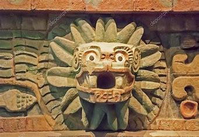
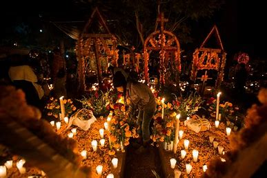
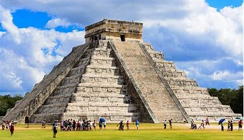

Cultura Mexicana
La cultura mexicana es el resultado tanto de la tradición indígena como de la cultura española
impuesta por la colonización. Un poco menor (en comparación) fue el aporte de la cultura africana traída
por los esclavos que los propios europeos incorporaron a la naciente sociedad latinoamericana.

Gastronomía
Una de las gastronomías de mayor personalidad en el mundo, heredera de las tradiciones aborígenes en las
cuales la tortilla de maíz, los frijoles, el chile, guacamole, tamal, pozole y las tostadas, así como las salsas,
son protagonistas. Las enchiladas, tacos y tamales gozan de renombre internacional, y en las variantes gastronómicas
aborígenes uno puede encontrar insectos (como los chapulines, chapuzones o escamoles), y otros alimentos característicos.
.jpeg)
Día de Muertos
Celebrado entre el 1 y el 2 de noviembre, fecha en que según la tradición local a los muertos se les permite
visitar a sus familias vivientes, esta es una de las tradiciones más célebres de la cultura mexicana. Esta
festividad se celebra con bailes desfiles, alimentos típicos (pan de muertos, calaveras dulces) y decoraciones
alusivas a la muerte (catrinas).

Arqueología
El legado arqueológico mexicano es de los más conocidos e importantes de América y del mundo, dado que una
porción significativa de su territorio fue ocupada por diversas culturas mesoamericanas, particularmente por
el Imperio Azteca, sometido a la fuerza por los conquistadores españoles. Los principales yacimientos
arqueológicos mexicanos son Tulúm, Chichen Itzá, Cobá, Uxmal, Monte Albán y Dzibanché.
